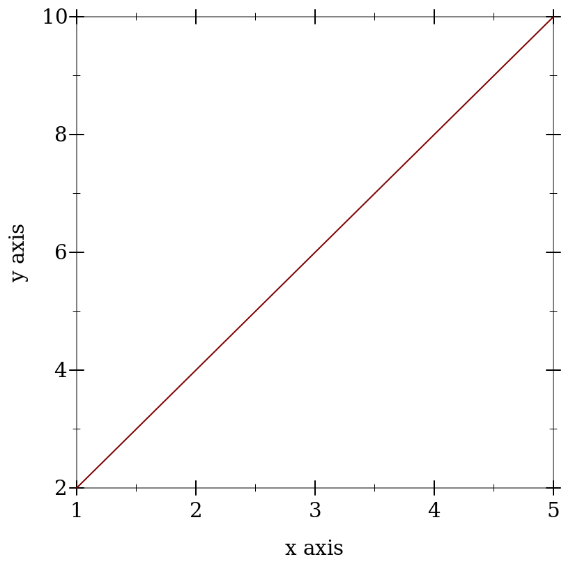
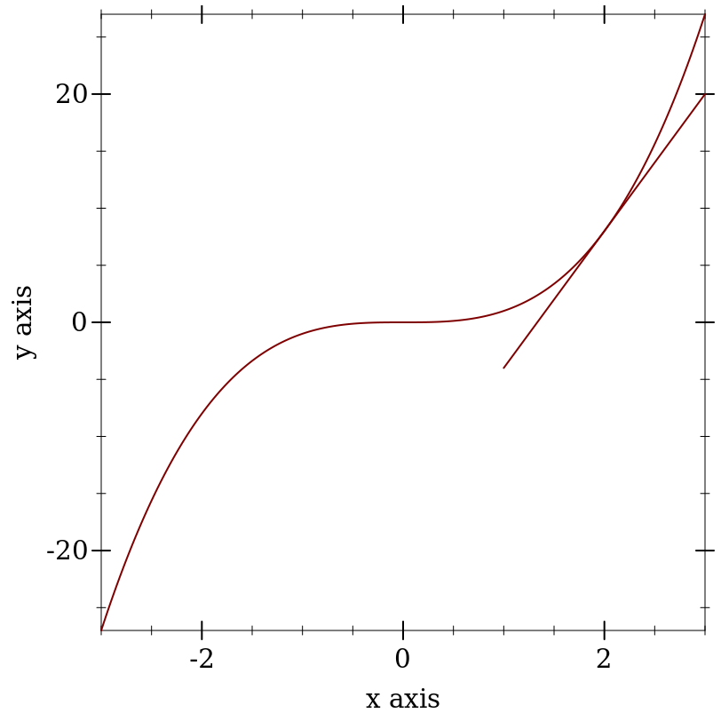

Models of Spiking Neurons and Differential Equations
1 An Introduction to Differential Equations
Why are Differential Equations an important technique for computational modelling in psychology and neuroscience?
The Action Potential
10 minutes to brush up on what an action potential is
Then be able to draw one and explain,
What are the axes?
What ion causes the upward deflection?
What causes the repolarization?
Who discovered the action potential?
Who won the Nobel Prize for characterizing the ionic events of the action potential experimentally and building a mathematical model?
Did you draw this?
Why is the action potential relevant for a discussion of DE’s in modelling?
Notation Concise summaries of things that would take too long to write out in detail. Mathematical notation is just a technical emoji. You probably know the "math" they represent; you just don’t know the abbreviation that is being used.
1.1 Multiple Ways to Say the Same Thing
\frac{dx}{dt}
\dot{x}
x’
f’(x)
2 Derivatives are Slopes
What is a slope?
When in doubt return to definition.
Deriving the definition of a derivative.
What is the definition of a derivative?
Digression: Use your computer as a tool for exploration
> (begin (define xs (list 1 2 3 4 5)) (define ys (list 2 4 6 8 10)) (plot (lines (map vector xs ys)))) 


Derivatives are Instantaneous Slopes
You pick two points that are "close enough" and you get an answer that is "close enough." If your answer isn’t "close enough" then you move your points closer, until /in the limit/ there is an infinitesimal distance between them.
Definition of the Derivative
\frac{df}{dx} = \lim_{h \to 0}\frac{f(x + h) - f(x)}{(x + h) - x}
3 Using Derivatives to Solve Problems With a Computer
3.1 What is the square root of 53?
We want to know the value of x that makes 53 =x^2 true?
Always use the computer for the busy work when you can. Your computer can solve many mathematical problems for you. For example, the derivative of x^3 is 2 x
Come up with a guess.
Calculate the error.
Adjust your guess based on the error.
This adjustment will use the derivative.